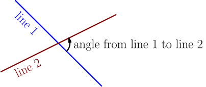
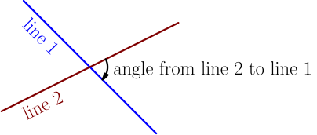
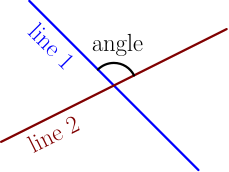
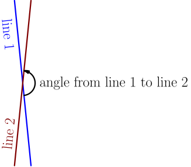
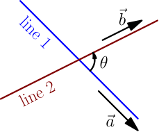
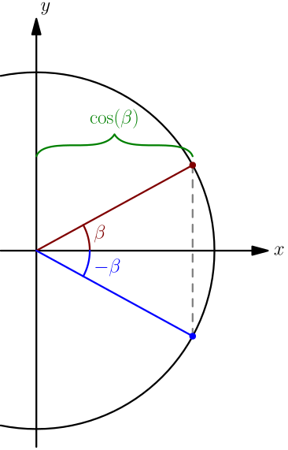
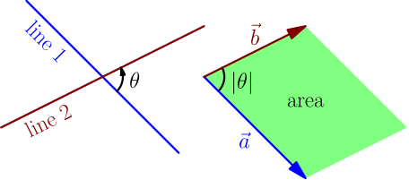
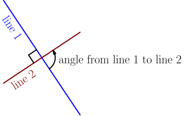
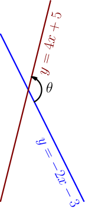

Angle Between Lines¶
On this page, we'll derive a formula for finding the angle between two non-vertical lines. It looks like this:

So, the angle goes from line 1 to line 2, and it's positive in the above picture, because it goes counter-clockwise. Note that if we do this the other way, as in angle from line 2 to line 1, we need to go in the opposite direction and our angle is negative:

Of course, you can take the absolute value if you don't care about the direction of the angle.
Also, note that I'm always drawing the angle to the right of the lines, which is not same as e.g. this:

The angle between the lines is always in the open interval $(-180^\circ,180^\circ)$; that is, always between $\pm 180^\circ$ but never equal to $\pm 180^\circ$. To see why, observe that we get the largest and smallest possible angles in situations like this:

Now the angle from line 1 to line 2 is just a little bit less than $180^\circ$, and the angle from line 2 to line 1 is just a little bit greater than $-180^\circ$. If we did this for vertical lines too, we would get angles equal to $\pm 180^\circ$, but we'll use slopes because that makes this easier, and vertical lines don't have slopes.
Perpendicularness check¶
Let $s_1$ and $s_2$ be the slopes of line 1 and line 2, and let $\theta$ be the angle from line 1 to line 2. In the line equation derivation with slope, we saw that if $s$ is the slope of a line, then $\I+s\J$ is a vector in the direction of that line, so the vectors $\vec a = \I+s_1\J$ and $\vec b = \I+s_2\J$ go in the directions of the lines.

Next we consider the dot product $\vec a \cdot \vec b$. We know that the dot product is zero if and only if $\vec a$ and $\vec b$ are perpendicular to each other. These vectors go in the directions of the lines, so here's the condition for the perpendicularity of the lines: $$ \begin{align} \vec a \cdot \vec b &= 0 \\ (\I+s_1\J) \cdot (\I+s_2\J) &= 0 \\ 1 \cdot 1 + s_1s_2 &= 0 \\ s_1s_2 &= -1 \end{align} $$
Two non-vertical lines with slopes $s_1$ and $s_2$ are perpendicular if and only if $s_1s_2 = -1$.
First Ugly Angle Formula¶
For calculating the angle between vectors, we write $$ \vec a \cdot \vec b = \abs{\vec a} \abs{\vec b} \cos(\abs{\theta}), $$ where $|\theta|$ is the angle between the vectors. We need absolute value here, because the angle between two vectors can't be negative, but $\theta$ can be negative, and that just means that it goes in a different direction (see above). Solving for $\cos(\abs{\theta})$, we get $$ \begin{align} \cos(\abs{\theta}) &= \frac{\vec a \cdot \vec b}{\abs{\vec a} \abs{\vec b}} \\ &= \frac{1+s_1s_2}{\abs{\I+s_1\J} \abs{\I+s_2\J}} \\ &= \frac{1+s_1s_2}{\sqrt{1+s_1^2} \sqrt{1+s_2^2}}. \\ \end{align} $$ This is a usable formula, but it contains an ugly square root mess in the denominator; we'll create a nicer formula soon. Also, this formula tells nothing about whether $\theta$ is positive or negative; it only gives information about $\abs{\theta}$.
We can simplify this formula slightly, because for any angle $\beta$, we have $\cos(-\beta) = \cos(\beta)$.

For this reason, the absolute value bars inside $\cos$ are unnecessary:
$$ \cos(\theta) = \cos(\abs{\theta}) = \frac{1+s_1s_2}{\sqrt{1+s_1^2} \sqrt{1+s_2^2}} $$
Second Ugly Angle Formula¶
Consider the determinant (TODO) with the vectors $\vec a = \I+s_1\J$ and $\vec b = \I+s_2\J$ as rows; that is, $$ \det \begin{bmatrix} 1 & s_1 \\ 1 & s_2 \end{bmatrix}. $$ The absolute value of this determinant is the area of a parallelogram created by $\vec a$ and $\vec b$.

The parallelogram has side lengths $\abs{\vec a}$ and $\abs{\vec b}$, and one of its angles is $\abs{\theta}$ (that's the angle between the vectors, see above), so the area is (TODO) $$ \abs{\vec a} \abs{\vec b} \sin(\abs{\theta}). $$ On the other hand, the area of this parallelogram is the absolute value of the determinant, so we have $$ \abs{\det\begin{bmatrix} 1 & s_1 \\ 1 & s_2 \end{bmatrix}} = \abs{\vec a} \abs{\vec b} \sin(\abs{\theta}). $$ This equation also holds if we remove both absolute values. Explaining why is straight-forward but also somewhat long and boring, so we'll skip that. Let me know if you are interested in the skipped details. $$ \det\begin{bmatrix} 1 & s_1 \\ 1 & s_2 \end{bmatrix} = \abs{\vec a} \abs{\vec b} \sin(\theta) $$ Now we can solve $\sin(\theta)$: $$ \sin(\theta) = \frac{ \det\begin{bmatrix} 1 & s_1 \\ 1 & s_2 \end{bmatrix} }{ \abs{\vec a} \abs{\vec b} } = \frac{ 1s_2-1s_1 }{ \abs{\I+s_1\J}\abs{\I+s_2\J} } = \frac{s_2-s_1}{\sqrt{1+s_1^2}\sqrt{1+s_2^2}} $$ Again, we ended up with a formula that contains an ugly square root mess.
Nice formula¶
Now we have two formulas with ugly square root messes. $$ \begin{align} \cos(\theta) &= \frac{1+s_1s_2}{\sqrt{1+s_1^2}\sqrt{1+s_2^2}} \qquad \text{First Ugly Angle Formula} \\ \sin(\theta) &= \frac{s_2-s_1 }{\sqrt{1+s_1^2}\sqrt{1+s_2^2}} \qquad \text{Second Ugly Angle Formula} \end{align} $$
The ugly mess cancels away if we divide these formulas by each other: $$ \require{cancel} \frac{\sin(\theta)}{\cos(\theta)} = \frac{~~ \frac{s_2-s_1 }{\sqrt{1+s_1^2}\sqrt{1+s_2^2}} ~~}{~~ \frac{1+s_1s_2}{\sqrt{1+s_1^2}\sqrt{1+s_2^2}} ~~} = \frac{ \cancel{\frac{1}{\sqrt{1+s_1^2}\sqrt{1+s_2^2}}} (s_2-s_1) }{ \cancel{\frac{1}{\sqrt{1+s_1^2}\sqrt{1+s_2^2}}} (1+s_1s_2) } = \frac{s_2-s_1}{1+s_1s_2} $$ Recall that we have a name for $\frac{\sin}{\cos}$; it's called $\tan$.
The angle $\theta$ from a non-vertical line with slope $s_1$ to a non-vertical line with slope $s_2$ satisfies $$ \tan(\theta) = \frac{s_2-s_1}{1+s_1s_2}. $$
Issues¶
Even though this formula is often presented in high school math books, it has some annoying issues.
One obvious issue is that it uses slopes, and so it can't be used with vertical lines. I mentioned this in the very beginning of this page.
Another obvious issue is division by zero. If the lines are perpendicular, we have $s_1s_2 = -1$, and so $1 + s_1s_2 = 0$. The situation looks like this:

In this picture, $s_1$ is negative and $s_2$ is positive, and the angle from line 1 to line 2 is $90^\circ$ (it's positive, because it goes counter-clockwise). If $s_1$ is positive and $s_2$ is negative, then the angle is $-90^\circ$. In either case, the angle is $\pm 90^\circ$, where the sign of the angle is the sign of $s_2$. It must be the case that one of the slopes is positive and the other is negative, because $s_1 s_2 = -1$; the only way how a product can be negative is that one of the numbers being multiplied is positive and the other is negative.
A less obvious issue is that the period of $\tan$ is 180 degrees. It means that $\tan$ can't distinguish angles that are 180 degrees apart; for example, $\tan(-10^\circ) = \tan(170^\circ)$. For that reason, the formula will give the same results when the angle between the lines is $-10^\circ$ and when the angle is $170^\circ$. Both of these could be valid answers, because the angles between two lines can be anything between $-180^\circ$ and $180^\circ$.
To figure out what the angle should be, we can first find any angle whose $\tan$ is whatever we get from the formula. In most calculators, there's a function named $\arctan$, $\operatorname{atan}$ or $\tan^{-1}$ that does this, and always returns an angle between $-90^\circ$ and $90^\circ$. Let's call this angle $$ \beta = \arctan\left( \frac{s_2-s_1}{1+s_1s_2} \right). $$ Now $\theta$ and $\beta$ are angles between $-180^\circ$ and $180^\circ$, and because we also have $\tan(\theta)=\tan(\beta)$, we know that we have either $\theta=\beta$ or $\theta=\beta \pm 180^\circ$. To figure out which of those it is, draw a picture.
Example¶
Let's find the angle from $y=-2x-3$ to $y=4x+5$. Here's a picture:

Letting $\theta$ denote the angle, we have $$ \tan(\theta) = \frac{4-(-2)}{1 + (-2) \cdot 4} = \frac{6}{-7} = -\frac{6}{7}. $$ Here's one angle having this $\tan$: $$ \arctan\left( -\frac 6 7 \right) = -40.60129... ^\circ $$ From the picture, we see that $\theta$ is positive, because it goes counter-clockwise. Thus $\theta = -40.60129...$ is impossible, and we instead have $\theta = -40.60129... \pm 180^\circ$. The $-180^\circ$ case would give an even more negative angle, so we must do $+180^\circ$. $$ \theta = -40.60129... + 180^\circ = 139.3987... ^\circ $$